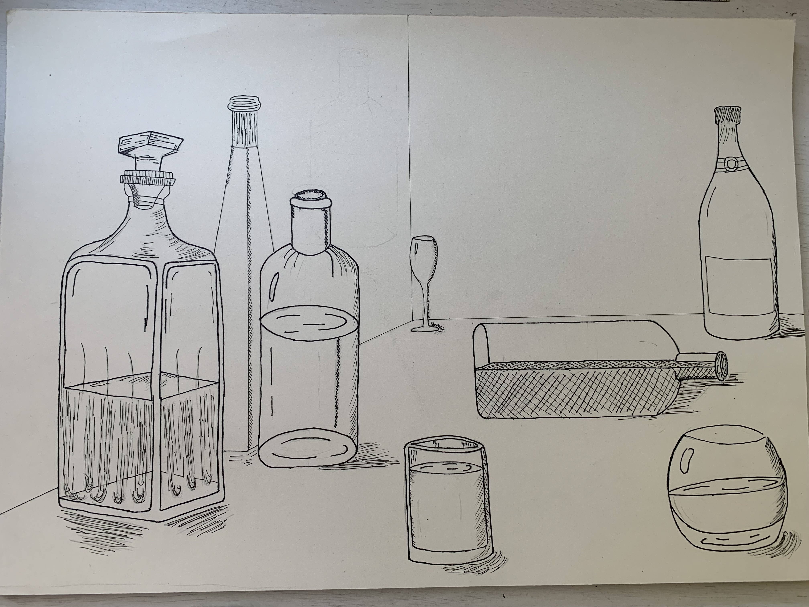
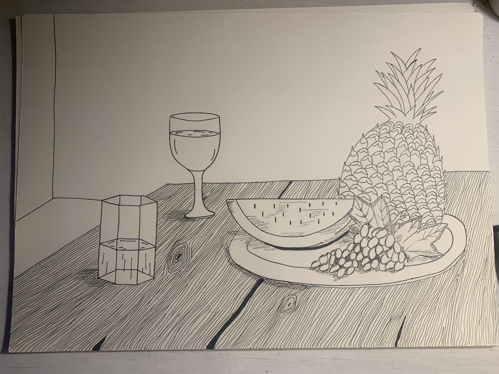

Moje ime je Ema Lovrić, rođena sam u Zagrebu 20. lipnja 2002. godine i trenutno imam 19 godina. Studiram na Grafičkom fakultetu na smjeru Dizajn grafičkih proizvoda te mi je ovo prva godina studiranja. Prije toga pohađala sam jezičnu gimnaziju, XVI. gimnaziju, a prije toga Osnovnu školu Silvija Strahimira Kranjčevića. Oduvijek sam kao mala voljela crtati (iako smatram da možda nisam najbolja u tome i dalje mi je jedan od najdražih hobija) i izražavati se na bilo kakav umjetnički način. U 8. razredu osnovne škole imali smo zadatak napraviti našu web stranicu te sam u paru sa još jednom curom napravila svoju prvu web stranicu. Tu je započela moja ljubav prema dizajnu i tad sam si rekla da ću jednoga dana raditi nekakav posao gdje ću dizajnirati bilo što preko bilo kakvog programa. Prvi put sam se susrela sa Photoshopom i Illustratorom na Informatici u prvom semestru i tu se rodila nova ljubav. Nadam se da ću jednog dana naći posao gdje ću moći raditi upravo u tim programima.
Ovo su jedni od prvih radova koje sam napravila u Photoshopu:


A ovo su neki moji radovi koje sam nacrtala u sklopu kolegija Likovna praksa 2:
 Također, jedan od najdražih hobija mi je kuhanje tako da ću staviti ovdje jedan recept koji bih voljela isprobati: